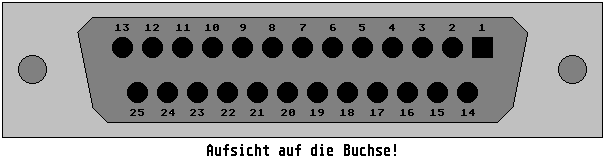

Previous
Next
TOC
Spaß beiseite :-) Die Platine so gedreht, daß die SCSI Buchsen nach
rechts zeigen. An der oberen SCSI-Buchse sieht man nun bereits die
Beschriftung J1.
Nun nimmt man den Durchgangsprüfer und mißt die Durchkontaktierungen
der Platine durch, um diejenige zu finden, die mit Pin 25 der beiden
DSub-Buchsen Verbindung hat (ich weiß nicht, ob es mehrere Platinen-
versionen gibt) und zu markieren.
An den oberen (linken) Pin 1 vom IC mit der Platinenbezeichnung U4
die Anode der (für die Nicht-Elektroniker: die Anode ist die Seite
ohne Strich) Diode anlöten. An den freien Draht der Diode kommt die
Microfuse Sicherung dran und das freie Ende der Microfuse Sicherung
wird mit der Durchkontaktierung verlötet oder mittels Fädeldraht
durch eine Durchkontaktierung gefädelt und direkt mit dem Lötanschluß
des Pin 25 der Dsub Buchse J1 auf der Unterseite verlötet. Anschlie-
ßend wird die Lötstelle begutachtet, sie muß hellglänzend sein; bei
matter Oberfläche ist die Lötung zu wiederholen!

So, nachdem dies geglückt ist, wird das Laufwerk in umgekehrter
Reihenfolge des Demontierens wieder zusammengesetzt, ein Medium
eingelegt (dieses muß es bei geglückten Zusammenbau nach einem Druck
auf die Eject-Taste auch wieder auswerfen, wenn nicht, hat man einen
Fehler gemacht) und mit dem Hostadapter verbunden. Nach dem Anschluß
an den Computer sollte sich nun das Laufwerk korrekt melden und zum
Arbeiten bereit sein.
Falls Sie den Eingriff nicht selber durchführen können, biete ich
Ihnen eine Modifizierung vom Preis von 30.- DM (inkl. Rückversand-
kosten als Paket an), näheres dazu bitte erst telefonisch mit mir
abklären unter meiner Rufnummer 06142/33429 (des liegt in Hesse).
Nun noch ein paar Erklärungen bei einigen Problemfällen:
• Das Laufwerk wird als Adaptec xyz vom Festplattentreiber erkannt.
Hier ist mit großer Wahrscheinlichkeit ein fehlerhaftes SCSI
Kabel im Einsatz (es werden gerne die Masseadern im Kabel redu-
ziert, Grundregel Nummer Eins bei SCSI-Kabel daher: SCSI-Kabel
mit einem Außendurchmesser von weniger als 10mm gar nicht erst
kaufen!
Tip: Hat das Kabel einen größeren Durchmesser als 10mm und ist
recht steif, wenn man es biegen möchte, ebenfalls die Finger weg.
• Als Festplattentreiber wird AHDI verwendet, aber das Laufwerk
wird nicht gefunden.
Da kommt eine Eigenart von AHDI zum Vorschein. Die meisten AHDI-
Versionen sind so konfiguriert, daß sie beim Busscan abbrechen,
wenn sich auf einer ID kein SCSI Gerät meldet.
weiterblättern
Kapitel Das Iomega ZIP Laufwerk, Seite 3